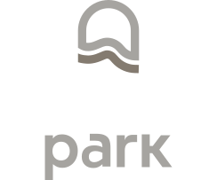
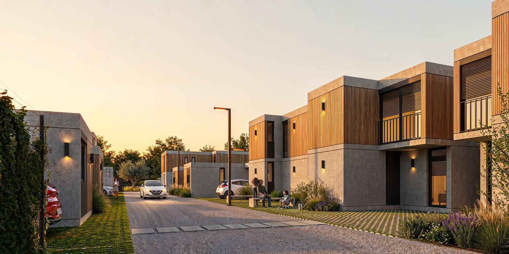
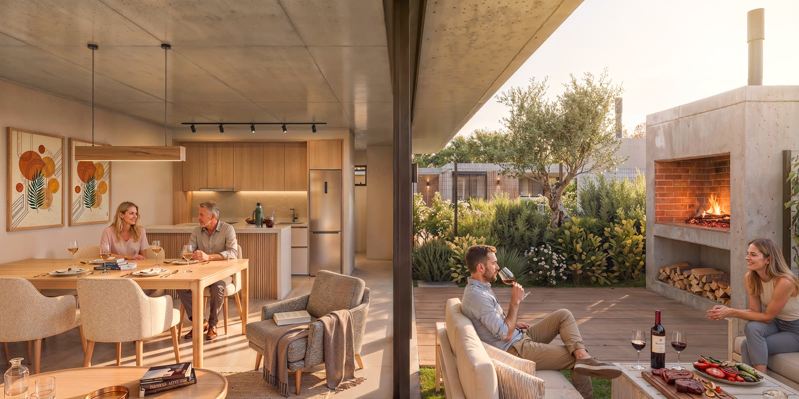
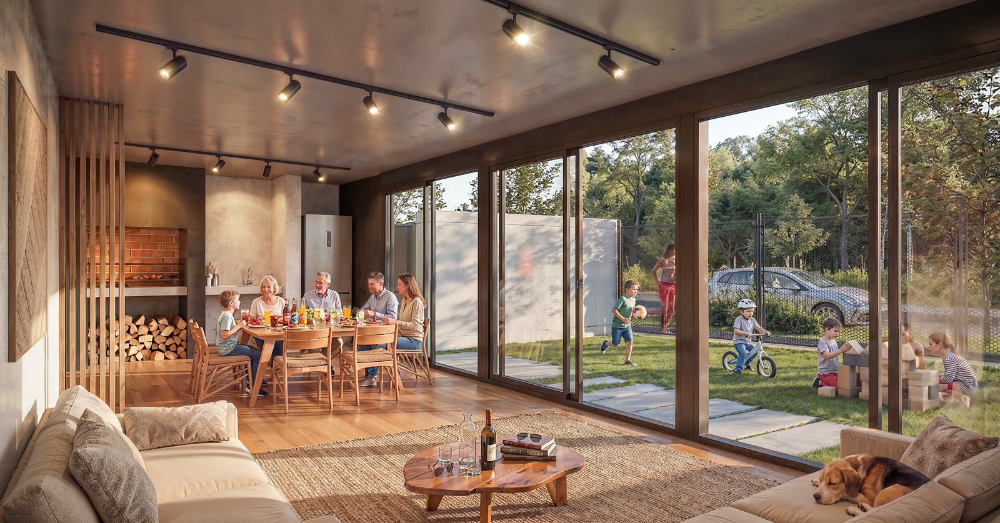
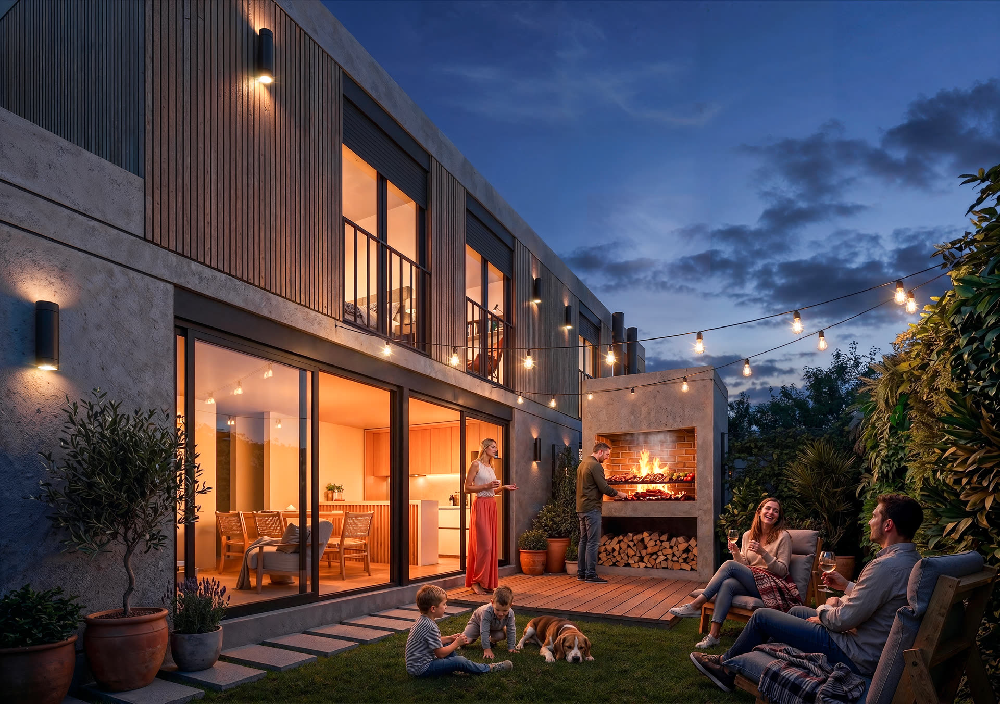

Lagomar · Ciudad de la Costa

Un lugar para vivir a tu manera.
28 casas en un barrio cerrado, a cinco minutos de la rambla. Desde USD 170.000.
El proyecto
Casas de una y dos plantas, todas con cochera, jardín y parrillero propio, dentro de un predio cerrado con seguridad.
A pocos metros de Costa Urbana, Almenara y Car One, entre Giannattasio y la Interbalnearia. Cerca de todo, con la tranquilidad de Ciudad de la Costa.

Calles internas, verde entre las casas.
Volúmenes simples en hormigón y madera, a escala de barrio.
Las casas
Seis tipologías de 60 a 93 m². Todas se entregan terminadas, con cochera, jardín y parrillero propio.
PrecioUSD 170.000 – 220.000
PrecioUSD 220.000 – 260.000
Preventa: entre 10 y 15% de descuento comprando en pozo, y entre 5 y 10% durante la obra. Contado o financiación bancaria. Escribinos y te pasamos las plantas, la disponibilidad y los precios actualizados.

Adentro
Living, comedor y cocina en un solo espacio, que se continúa afuera en el parrillero y el jardín propio. Sistema constructivo tradicional, entrega terminada.

Espacios comunes
El complejo está pensado para que la vida pase también afuera de la casa.

Cada casa con su parrillero y su jardín.
Ubicación
Contacto
Te mandamos las plantas, la disponibilidad, los precios actualizados y las formas de pago.
WhatsApp093 999 644 Teléfono093 999 644 Correomarcos2002urtiaga@gmail.com